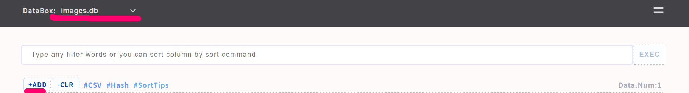
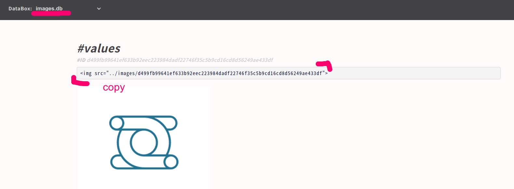
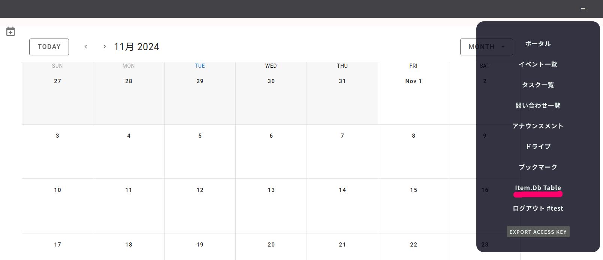

small shell Basic 2
スクラッチアプリ
前章で説明したBase APP(ベースアプリ)がカスタマイズができないテーブル型のデータ管理に特化したツールであるのに対し、カスタマイズが可能なアプリをsmall shellではScratch APP(スクラッチアプリ)と呼びます。Scratch APPはアプリをカスタマイズしながらチームで情報共有をより効果的におこなうことを目的に設計されていますが、カスタマイズ自体も段階的に行うことができます。いずれの段階でもScratch APPはチームでのデータ共有に貢献しますので、必ずしもコードの編集までできるようになる必要もありません
アプリの段階的カスタマイズ
1. データを管理するテーブルを生成する //small-shell基礎#1
2. ポータルページを生成・編集し、データとドキュメントを同時にアプリに収納する //本章で説明
3. small shell frameworkを理解し、コードを直接編集しカスタマイズする //small-shell応用
スクラッチアプリの利用以外にも、外部ユーザーからの問い合わせ受付のためのフォームアプリを作成したり、公開済みアプリをインポートしたりといったsmall-shellの利用方法もありますので本ページの後半で順次説明します
ポータルの活用
portal(ポータル)というのは、入口といったような意味をもつ英語ですが、Scratch APPではログインした際に表示されるトップページのことを指します。Base APPではログインするとそのままテーブルが表示されますが、テーブルはDataBoxにはいっているデータを表示することはできてもデータそれ自体の位置づけを説明することができません。Scratch APPではポータルをトップページに表示することで、データの位置づけやそれを管理するルールや手続きを記述することができます。それはインターネット上のホームページのように有用な情報共有の方法を提供します
スクラッチアプリ生成
それでは早速アプリ生成を生成していきましょう、ちなみにScratch APPはBase APPのうえに生成されますので事前に前章を参照しBase APPを生成してください。以下はtestという名前の共有パスコード（４桁数字）で認証できるアプリを生成しています。primary databoxというのはアプリが管理するデータボックスですが、前章で生成したitem.dbを指定してみましょう
スクラッチアプリもgenコマンドでの作成となります
sudo /usr/local/small-shell/adm/gen -app
$ sudo /usr/local/small-shell/adm/gen -app
Type of APP (1.BASE | 2.FORM | 3.SCRATCH): 3
APP Name: test
Type of Authentication (1.shared pass | 2.user key | 3.other | 4.none): 1
Shared Passcode: ****
Primary databox: item.db
Do you want to enable IP whitelisting for this APP? (yes | no): no
APP will be generated by following order, please check it
-----------------------------------------------------------------
APP Type: 3.SCRATCH
APP Name: test
Authentication: shared_pass
IP_whitelisting: no
Access URL: http://***.***.***.****/test
Shared Passcode: ****
-----------------------------------------------------------------
Is it OK? (yes | no): yes
認証方式
Scratch APPでは以下認証方式が実装可能です
- [shared pass] 共用パスコードでアクセス
- [user key] ユーザー毎に鍵を発行してアクセス
- [other] 認証方式を自分で定義
- [none] アプリへのアクセスに認証が不要
Note
user keyについてはアプリ毎にユーザーを作成のうえkeyを初期化URLで生成する必要があります。アプリとしてTeam APPを利用する際の例を参考にしてください
ログイン画面の確認
アプリケーションが正常に生成されているはずですので、上記genコマンドの対話にて表示されたAccess URLへアクセスしshared pass (4桁数字)を入力してください

ポータルの確認
認証が成功するとデフォルトのポータルページが表示されます。このデフォルトのポータルページはマークダウンの文法を含んだテンプレートとしてそのまま利用可能です

マークダウン
マークダウンはHTMLをより即席で生成するための文法ですが、small shellではポータルページの編集に用いることができます。マークダウンの編集はBase APP上で行うことができます。 文法はデフォルトページに表示されていますので記述例をコピーしてつかっていただくのが効率的です。文法の詳細はこちらもご確認くださいMarkdown
Note
ポータルはアプリ毎に定義されますので、 Base APPのテーブル左メニューから"アプリ名.UI.md.def"を選択のうえ編集してください。以下はtestアプリの編集ページリンクです

ポータルページ編集
Base APPで直接ポータルページをデータとして編集していきましょう、それぞれのフィールドを入力してpushボタンを押すとポータル画面が更新されます。

| フィールド | 記法 | アウトプット |
|---|---|---|
| Description | markdown or HTML | ポータルのメインページを記述します。markdownとHTMLどちらも併用できるため柔軟なページ編集が可能です |
| YAML for right menu of header | yaml | 右メニュー"="に入れるリンクをyamlで定義します。yaml例は初期値としてあらかじめフィールドに入っていますので参考にしてください。ちなみに値をすべて消すと"="メニュー自体を消せます |
| YAML for left menu of header | yaml | 左寄せのメニューバーに入れるリンクをyamlで定義します。yaml例は右メニュー同様あらかじめフィールドに入っています |
| Logo | HTML | ロゴファイルのimgタグを記入することで、左メニューに表示されるようになります。ロゴファイルはimages.dbにてアップロードをしてください |
| Footer | text | footerを定義します |
イメージのアップロード
ロゴやイメージをアップロードしてスクラッチアップに追加したい場合、Base APP上のDataBoxのimages.dbにファイルをアップロードしてimgタグを取得して上記ポータルページのDescriptionもしくはlogoフィールドに貼り付けて下さい 
以下はアップロードしたロゴファイルのimageタグをコピーする例です 
アプリへのユーザー追加
key認証を選択した場合、ユーザー毎に鍵を生成する必要があります。以下コマンドでユーザー毎の鍵生成URLを作成して下さい
sudo /usr/local/small-shell/adm/ops app:<アプリ> add.usr:<ユーザー名>
テンプレートの利用
small shellの周辺プロジェクトとしてテンプレートがいくつか公開されています、ここではTeam APPをインポートして使ってみましょう。Team APPではチームの共同作業に必要な機能をパッケージ化したsmall shellフレームワークを利用したツールです。チームのカレンダー共有、ファイル共有、タスクの可視化、外部からの問い合わせ受付などが行えます。また、Team APPに管理したいDataBoxを追加することもできます
Team APP install
早速Team APPをインストールしましょう、git cloneした後deploy.shを実行するとアプリとDataBoxが自動生成されますが、small-shell-appsパッケージは前ページでの日本語化の際にすでにgit cloneをしているため以下実行例ではcloneコマンドをコメントアウトしています。
テンプレートのダウンロードはgit cloneコマンドでおこないます
git clone https://github.com/naruoken/small-shell-apps
なお、small-shell-appsパッケージは前ページでの日本語化の際にすでにgit cloneをしているため以下実行例ではエラーが表示されています
# ダウンロード
$ cd $HOME; git clone https://github.com/naruoken/small-shell-apps
※前ページでの日本語化パッケージインストールの際にgit cloneをしているため以下エラーが表示される可能性があります
fatal: destination path 'small-shell-apps' already exists and is not an empty directory.
# Team APPのインストール
$ cd $HOME/small-shell-apps/team_app; sudo ./deploy.sh
small-shell root (/usr/local/small-shell): <enter>
Do you want to enable IP whitelisting for this APP ? (yes | no): no
# Team APPの日本語化
$ cd $HOME/small-shell-apps/dictionary/JP; sudo ./deploy.sh
small-shell root (/usr/local/small-shell): <enter>
Team APPユーザー追加
Team APPはBase APPのユーザーを引き継ぎませんので、deploy.shのインストラクションに従って作成しましょう。以下ではteam APPにtestというユーザーを作成しています
$ sudo /usr/local/small-shell/adm/ops app:team add.usr:test
ユーザー生成後に、Initialize URL（鍵の初期化URL)が生成れるのでユーザーへURLを案内しましょう。Base APPと同じくInitialize URLへアクセスするとTeam APPへアクセスするための鍵とリンクが生成されます。Initialize URLは一回アクセスすると無効になるので気をつけてください
Team APPログイン
Team APPへログインして右上のeven(=)メニューをクリックするとメニューが展開します。各種機能をお試しください, Team eventやtaskをカレンダーに一元的に表示できるので便利です。Driveを使うとファイル共有も簡単に行えます
http://{サーバアドレス}/team

データボックスの追加
Teamで管理したいDataBoxを追加したい場合も、容易に追加ができます。Team APPのsubAPPとしてアプリケーションを追加しましょう、3.SCRATCH を選択してapp_nameを定義する際に@teamと付けることでTeam APP配下のsub APPという宣言が可能です。その後追加したいDataBoxを指定しましょう。以下ではitem.dbを追加します。Team APP以外のスクラッチアップでも同様に@をつけることでサブアプリの作成とデータボックスの追加が可能です
$ sudo /usr/local/small-shell/adm/gen -app
Type of APP (1.BASE | 2.FORM | 3.SCRATCH): 3
APP Name: item@team
Subapp Databox: item.db
APP will be generated by following order, please check it
-----------------------------------------------------------------
APP Type: 3.SCRATCH
APP Name: item
Parent APP: team
Sub APP Databox: item.db
-----------------------------------------------------------------
Is it OK? (yes | no): yes
Team APPにデータボックスが追加されましたのでブラウザでメニューを確認をしてみましょう

もしメニューの文言を更新したい場合は、Team APPについてはportal編集機能がありませんので直接ファイルを編集して更新してください
$ nano /var/www/descriptor/common_parts/team_common_menu
Note
インポートしたアプリについては諸々編集権限がないため細かいカスタマイズを行うには直接編集が必要になりますが、1から生成したスクラッチアプリであればBase APPでメニュー含めて更新可能です。スクラッチアプリについてはsmall-shell基礎#2をご確認ください
その他操作
Scratch APPへのtag追加
スクラッチアプリのテーブルにタグを追加したい場合、以下コマンドを実行してください
sudo /usr/local/small-shell/adm/ops add.tag:$databox{key{word}} app:$app_name
# statusがon-goingなタスクをフィルターするtagを追加
$ sudo /usr/local/small-shell/adm/ops add.tag:tasks{status{on-going}} app:tasks

Initialize URLの再生成
Scratch APPの鍵生成URLを再生成する場合、app:オプションを指定する必要があります
sudo /usr/local/small-shell/adm/ops app:<アプリ> initialize.usr:<ユーザー名>
# team APPを指定する場合
$ sudo /usr/local/small-shell/adm/ops app:team initialize.usr:test
フォーム利用の検討
アカウントを持たない外部ユーザーから所定の入力項目をもとにデータを収集し、DataBoxに格納するために外部Formの作成をすることができます。ここでは外部ユーザーからの意見収集のためのアンケートformの作成を例としてご説明します。
アンケートBox作成
初めに収集したいデータを格納するDataBoxを作成しましょう、ここでは架空の製品である"XYZ"についての感想をアンケートとして収集しましょう。その際一意となるkeyは特に想定されないため、primary_keyはhashidとします
Note
primary_keyをhashidとすることで一意となるkeyを指定せずに、IDをシステム側で自動生成させることが可能です
$ sudo /usr/local/small-shell/adm/gen -databox
Target Databox: survey.box
primary_key(col1): hashid
↑ ここをhashidとしてください、その後は対話を続けてください
Data box will be generated by following order, please check it
-----------------------------------------------------------------
Databox Name:survey.box
#primary_key
name="hashid"
label="#ID"
type="text"
option="required"
#column2
name="generation"
label="世代"
type="select"
params="10-20代,30-40代,50-60代,70歳以上"
option="required"
#column3
name="impression"
label="使ってみた印象"
type="radio"
params="良い,普通,悪い"
option="required"
#column4
name="comment"
label="コメントがあればお願いします"
type="textarea"
option="" # <- requiredはNoで回答
-----------------------------------------------------------------
Note
入力値をパラメーターとして選べるようにする際、区切り文字として上記例のとおりカンマ,を使って並べて記載することができます。
Warning
対話モードの際にバックスペースを使って日本語を修正すると入力値が壊れるため、できるだけコピペなどで生成してください
フォームの生成
DataBoxの作成に続いて、外部向けの入力フォームを生成しましょう、ここでもgenコマンドをお使いただきます。アプリケーションタイプとして2.FORMを選択し、名前は仮にsurveyとしましょう。DataBoxとしては先ほど作成したsurvey.boxを指定します
Note
IP whitelistingは接続可能なIPアドレスを制限するかという確認ですが、いったんnoとして作成します
$ sudo /usr/local/small-shell/adm/gen -app
Type of APP (1.BASE | 2.FORM | 3.SCRATCH): 2
Form Name: survey
Target Databox: survey.box
Description of the Form : xyzにつてのアンケートにお答えください
Do you want to enable IP whitelisting for this Form? (yes | no): no
Select key that must be in the Form (generation | impression | comment) : generation
Add more keys to the Form? (yes | no): yes
Select additional key that must be in the Form (impression | comment) : impression
Add more keys to the Form ? (yes | no): yes
Select additional key that must be in the Form (comment) : comment
Form will be generated by following order, please check it
-----------------------------------------------------------------
APP type: 2.FORM
Form Name: survey
Target Databox: survey.box
Description: xyzにつてのアンケートにお答えください
IP_whitelisting: no
Included keys: generation,impression,comment
Access URL: http://{サーバアドレス}/survey
-----------------------------------------------------------------
Is it OK? (yes | no): yes

BaseAPPで登録されたデータを見てみると、一意のIDも自動生成されていることが確認できます。

実環境の構築
small shellの学習環境としてUnixBasic1ではWSLとChromebookをご紹介しましたが、WSL,chromebookはともに外部からのアクセスができないためローカルでの学習にとどまります。アプリをネットワーク上でアクセス可能にするためには、クラウドの利用をする必要があります。クラウドサービスとしてはAWSやVPSを利用することが考えられますが、インターネットへのサーバ公開に際してはセキュリティ対策が必要になりますので予め注意してください。サーバに関する専門知識をつけた上で運用することをおすすめします